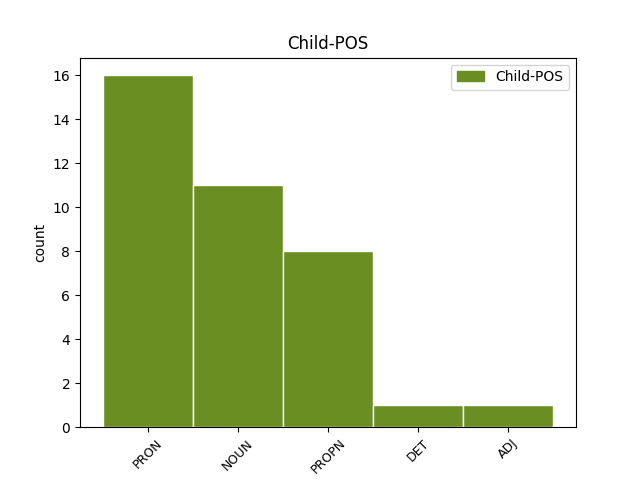

Distribution of features within this leaf


Agreement Rules sorted by frequency.
When the head token is NOUN
1 Samarbeidsregjeringen _ _ _ _ 0 _ _ _
2 har _ _ _ _ 0 _ _ _
3 sin _ _ _ _ 0 _ _ _
4 verdiforankring _ _ _ _ 0 _ _ _
5 i _ _ _ _ 0 _ _ _
6 rettsstatens rettsstat NOUN _ Case=Gen|Definite=Def|Gender=Masc|Number=Sing 0 _ _ _
7 og _ _ _ _ 0 _ _ _
8 demokratiets demokrati NOUN _ Case=Gen|Definite=Def|Gender=Neut|Number=Sing 6 conj _ _
9 prinsipper _ _ _ _ 0 _ _ _
10 og _ _ _ _ 0 _ _ _
11 den _ _ _ _ 0 _ _ _
12 kristne _ _ _ _ 0 _ _ _
13 og _ _ _ _ 0 _ _ _
14 humanistiske _ _ _ _ 0 _ _ _
15 kulturarv _ _ _ _ 0 _ _ _
16 . _ _ _ _ 0 _ _ _
When the head token is PRON
1 Meg jeg PRON _ Animacy=Hum|Case=Acc|Number=Sing|Person=1|PronType=Prs 0 _ _ _
2 , _ _ _ _ 0 _ _ _
3 deg du PRON _ Animacy=Hum|Case=Acc|Number=Sing|Person=2|PronType=Prs 1 conj _ _
4 , _ _ _ _ 0 _ _ _
5 kjærester _ _ _ _ 0 _ _ _
6 , _ _ _ _ 0 _ _ _
7 koner _ _ _ _ 0 _ _ _
8 og _ _ _ _ 0 _ _ _
9 barn _ _ _ _ 0 _ _ _
10 kan _ _ _ _ 0 _ _ _
11 alle _ _ _ _ 0 _ _ _
12 ha _ _ _ _ 0 _ _ _
13 glede _ _ _ _ 0 _ _ _
14 av _ _ _ _ 0 _ _ _
15 dette _ _ _ _ 0 _ _ _
16 , _ _ _ _ 0 _ _ _
17 men _ _ _ _ 0 _ _ _
18 vi _ _ _ _ 0 _ _ _
19 har _ _ _ _ 0 _ _ _
20 funnet _ _ _ _ 0 _ _ _
21 ut _ _ _ _ 0 _ _ _
22 at _ _ _ _ 0 _ _ _
23 det _ _ _ _ 0 _ _ _
24 lønner _ _ _ _ 0 _ _ _
25 seg _ _ _ _ 0 _ _ _
26 å _ _ _ _ 0 _ _ _
27 fokusere _ _ _ _ 0 _ _ _
28 . _ _ _ _ 0 _ _ _
When the head token is PROPN
1 Det _ _ _ _ 0 _ _ _
2 gjelder _ _ _ _ 0 _ _ _
3 Hydros _ _ _ _ 0 _ _ _
4 modell _ _ _ _ 0 _ _ _
5 , _ _ _ _ 0 _ _ _
6 Akers Aker PROPN _ Case=Gen 0 _ _ _
7 – _ _ _ _ 0 _ _ _
8 som _ _ _ _ 0 _ _ _
9 vi _ _ _ _ 0 _ _ _
10 ser _ _ _ _ 0 _ _ _
11 i _ _ _ _ 0 _ _ _
12 avisene _ _ _ _ 0 _ _ _
13 i _ _ _ _ 0 _ _ _
14 dag _ _ _ _ 0 _ _ _
15 – _ _ _ _ 0 _ _ _
16 og _ _ _ _ 0 _ _ _
17 også _ _ _ _ 0 _ _ _
18 Statoils Statoil PROPN _ Case=Gen 6 conj _ _
19 . _ _ _ _ 0 _ _ _
Disagree Examples:
1 En _ _ _ _ 0 _ _ _
2 dr. _ _ _ _ 0 _ _ _
3 grad _ _ _ _ 0 _ _ _
4 av _ _ _ _ 0 _ _ _
5 Nellejet _ _ _ _ 0 _ _ _
6 Zorgdrager _ _ _ _ 0 _ _ _
7 om _ _ _ _ 0 _ _ _
8 hendelsene _ _ _ _ 0 _ _ _
9 har _ _ _ _ 0 _ _ _
10 da _ _ _ _ 0 _ _ _
11 også _ _ _ _ 0 _ _ _
12 den _ _ _ _ 0 _ _ _
13 treffende _ _ _ _ 0 _ _ _
14 tittelen _ _ _ _ 0 _ _ _
15 , _ _ _ _ 0 _ _ _
16 De De PRON _ Case=Nom|Number=Plur|Person=3|PronType=Prs 0 _ _ _
17 rettferdiges rettferdig ADJ _ Case=Gen|Degree=Pos|Number=Plur 16 flat@name _ _
18 strid _ _ _ _ 0 _ _ _
19 ( _ _ _ _ 0 _ _ _
20 Vett _ _ _ _ 0 _ _ _
21 & _ _ _ _ 0 _ _ _
22 viten _ _ _ _ 0 _ _ _
23 1997 _ _ _ _ 0 _ _ _
24 ) _ _ _ _ 0 _ _ _
25 . _ _ _ _ 0 _ _ _
1 Du _ _ _ _ 0 _ _ _
2 trenger _ _ _ _ 0 _ _ _
3 disse _ _ _ _ 0 _ _ _
4 dagene _ _ _ _ 0 _ _ _
5 for _ _ _ _ 0 _ _ _
6 å _ _ _ _ 0 _ _ _
7 minne _ _ _ _ 0 _ _ _
8 deg du PRON _ Animacy=Hum|Case=Acc|Number=Sing|Person=2|PronType=Prs 0 _ _ _
9 selv _ _ _ _ 0 _ _ _
10 , _ _ _ _ 0 _ _ _
11 og _ _ _ _ 0 _ _ _
12 de de PRON _ Case=Nom|Number=Plur|Person=3|PronType=Prs 8 conj _ _
13 rundt _ _ _ _ 0 _ _ _
14 deg _ _ _ _ 0 _ _ _
15 , _ _ _ _ 0 _ _ _
16 på _ _ _ _ 0 _ _ _
17 at _ _ _ _ 0 _ _ _
18 du _ _ _ _ 0 _ _ _
19 faktisk _ _ _ _ 0 _ _ _
20 har _ _ _ _ 0 _ _ _
21 de _ _ _ _ 0 _ _ _
22 rundt _ _ _ _ 0 _ _ _
23 deg _ _ _ _ 0 _ _ _
24 . _ _ _ _ 0 _ _ _
1 Det _ _ _ _ 0 _ _ _
2 var _ _ _ _ 0 _ _ _
3 de de PRON _ Case=Nom|Number=Plur|Person=3|PronType=Prs 0 _ _ _
4 Seynes' Seynes PROPN _ Case=Gen 3 flat@name _ _
5 bestefar _ _ _ _ 0 _ _ _
6 som _ _ _ _ 0 _ _ _
7 designet _ _ _ _ 0 _ _ _
8 den _ _ _ _ 0 _ _ _
9 berømte _ _ _ _ 0 _ _ _
10 Kelly-vesken _ _ _ _ 0 _ _ _
11 i _ _ _ _ 0 _ _ _
12 1935 _ _ _ _ 0 _ _ _
13 . _ _ _ _ 0 _ _ _
1 De de PRON _ Case=Nom|Number=Plur|Person=3|PronType=Prs 0 _ _ _
2 eller _ _ _ _ 0 _ _ _
3 meg jeg PRON _ Animacy=Hum|Case=Acc|Number=Sing|Person=1|PronType=Prs 1 conj _ _
4 ? _ _ _ _ 0 _ _ _